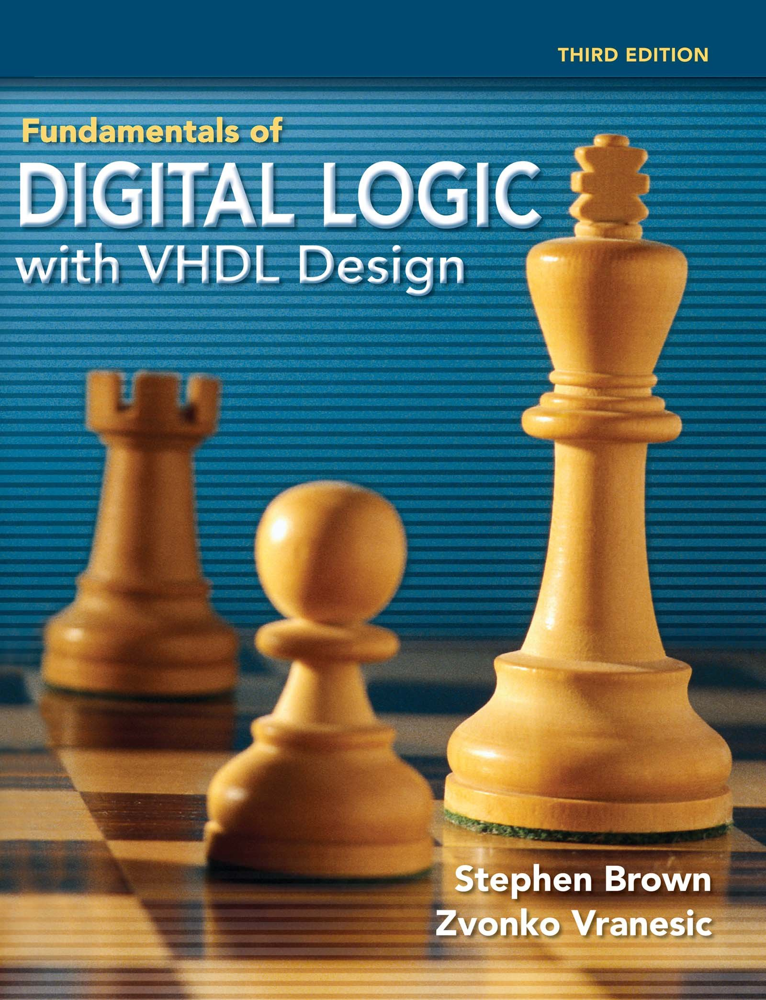
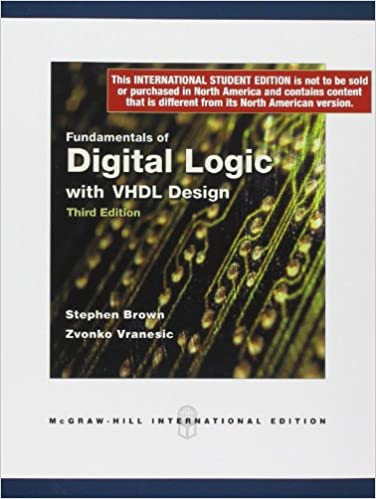
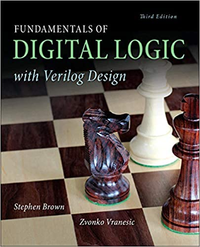
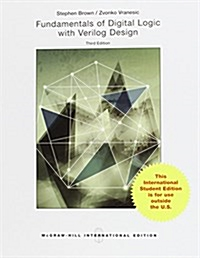

[2022 Spring] Digital Logic Design
Course Information
| Course | Digital Logic Design | Department | Computer Science and Engineering |
|---|---|---|---|
| Office Hours | TBD | Course No. and Class | 36500-01 |
| Hours | 3.0 | Academic Credit | 3.0 |
| Professor | Yoon, Myung Kuk | Office | Jinseonmi-Gwan, 213 |
| Telephone | (82)-2-3277-3819 | myungkuk.yoon at ewha.ac.kr | |
| Value of Competence | Pursuit of Knowledge (80), Creative Convergence (20) | Keyword | Logic circuits, Combinational Logic, Sequential Logic |
| Class Time | (TUE) 15:30 ~ 16:45 (THU) 12:30 ~ 13:45 |
Course Description
Digital (or Boolean) Logic is a system of rules that allow us to make complicated decisions based on simple YES/NO (1/0) questions. Students will learn what digital logic is and how digital logic works in this class.
Prerequisites
NONE
Course Format
| Lecture | Discussion/Presentation | Experiment/Practicum | Field Study | Other |
|---|---|---|---|---|
| 100% | 0% | 0% | 0% | 0% |
Course Objectives
In this class, students will be introduced to:
- An overview of integrated circuit technology
- Logic functions and circuits
- Boolean algebra for dealing with logic functions
- Logic gates
- Analysis of circuits
- How transistors operate
- Graphical representation of logic functions in the form of Karnaugh maps
- Representation of numbers in computers
- Circuits used to perform arithmetic operations
- Commonly used combinational sub-circuits
- Multiplexers, Flip-flops, Registers, Shift registers, and so on
- Sequential behavior of digital circuits
- Hardware description languages: VHDL and Verilog
- More if time permits
Evaluation System
Relative + Absolute Evaluation
| Midterm Exam | Final Exam | Quizzes | Presentations | Projects | Assignment | Participation | Other |
|---|---|---|---|---|---|---|---|
| 30% | 30% | 20% | 0% | 0% | 20% | 0% | 0% |
*Evaluation of group projects may include peer evaluations. Explain of evaluation system
- About 35% of students: A
- About 45% of students: B
- About 20% of students: C and below
Required Materials
You do NOT need to buy all the books below. You just need one of the book!
-

Fundamentals of Digital Logic with VHDL Design
Stephen Brown and Zvonko Vranesic Edition: Third (3E) ISBN-13: 978-0073529530 ISBN-10: 0073529532
-

Fundamentals of Digital Logic with VHDL Design
Stephen Brown and Zvonko Vranesic Edition: Third (3E) + International ISBN-13: 978-0071268806
-

Fundamentals of Digital Logic with Verilog Design
Stephen Brown and Zvonko Vranesic Edition: Third (3E) ISBN-13: 978-0073380544 ISBN-10: 0073380547
-

Fundamentals of Digital Logic with Verilog Design
Stephen Brown and Zvonko Vranesic Edition: Third (3E) + International ISBN-13: 978-1259072031
Supplementary Materials
NONE
Optional Additional Readings
NONE
Course Contents
| Week | Date | Topics & Materials | Assignement & Quiz |
|---|---|---|---|
| Week #01 | 2022/03/03 (THU) | CH #00: Digital Logic Design | |
| 2022/03/08 (TUE) | CH #01: Design Concepts | ||
| Week #02 | 2022/03/10 (THU) | ||
| 2022/03/15 (TUE) | CH #02: Introduction to Logic Circuits | ||
| Week #03 | 2022/03/17 (THU) | ||
| 2022/03/22 (TUE) | |||
| Week #04 | 22022/03/24 (THU) | CH #03: Implementation Technology | |
| 2022/03/29 (TUE) | |||
| Week #05 | 2022/03/31 (THU) | ||
| 2022/04/05 (TUE) | CH #04: Optimized Implementation of Logic Functions | ||
| Week #06 | 2022/04/07 (THU) | Quiz #01 | |
| 2022/04/12 (TUE) | |||
| Week #07 | 2022/04/14 (THU) | ||
| 2022/04/19 (TUE) | |||
| Week #08 | 2022/04/21 (THU) | ||
| 2022/04/26 (TUE) | |||
| Week #09 | 2022/04/28 (THU) | CH #05:Number Representation and Arithmetic Circuits | |
| 2022/05/03 (TUE) | MIDTERM EXAM | ||
| Week #10 | 2022/05/05 (THU) | CH #05:Number Representation and Arithmetic Circuits | Recoreded (Children's Day) |
| 2022/05/10 (TUE) | |||
| Week #11 | 2022/05/12 (THU) | ||
| 2022/05/17 (TUE) | CH #06: Combinational-Circuit Building Blocks | ||
| Week #12 | 2022/05/19 (THU) | Quiz #02 | |
| 2022/05/24 (TUE) | CH #07:Flip-Flops, Registers, Counters, and a Simple Processor | ||
| Week #13 | 2022/05/26 (THU) | ||
| 2022/05/31 (TUE) | Recoreded (A Foundation Day) | ||
| Week #14 | 2022/06/02 (THU) | CH #08:Synchronous Sequential Circuits | |
| 2022/06/07 (TUE) | |||
| Week #15 | 2022/06/09 (THU) | ||
| 2022/06/14 (TUE) | FINAL EXAM | ||
| Week #16 | 2022/06/16 (THU) | NO CLASS | |
| 2022/06/21 (TUE) | FINAL EXAM REVIEW |
Course Policies
*For laboratory courses, all students are required to complete lab safety training.
Special Accommodations
*According to the University regulation #57, students with disabilities can request special accommodation related to attendance, lectures, assignments, and/or tests by contacting the course professor at the beginning of semester. Based on the nature of the students’ requests, students can receive support for such accommodations from the course professor and/or from the Support Center for Students with Disabilities (SCSD).
Extra Information
The contents of this syllabus are not final—they may be updated.